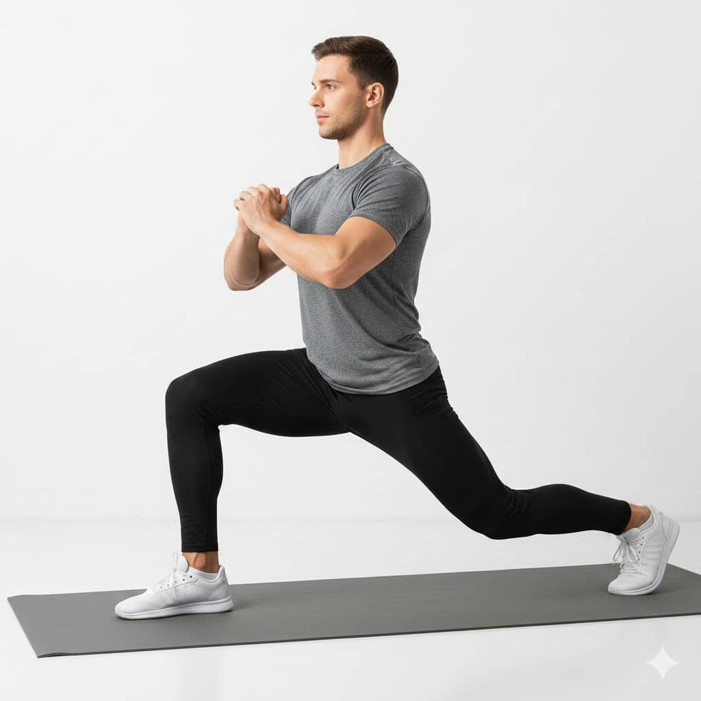
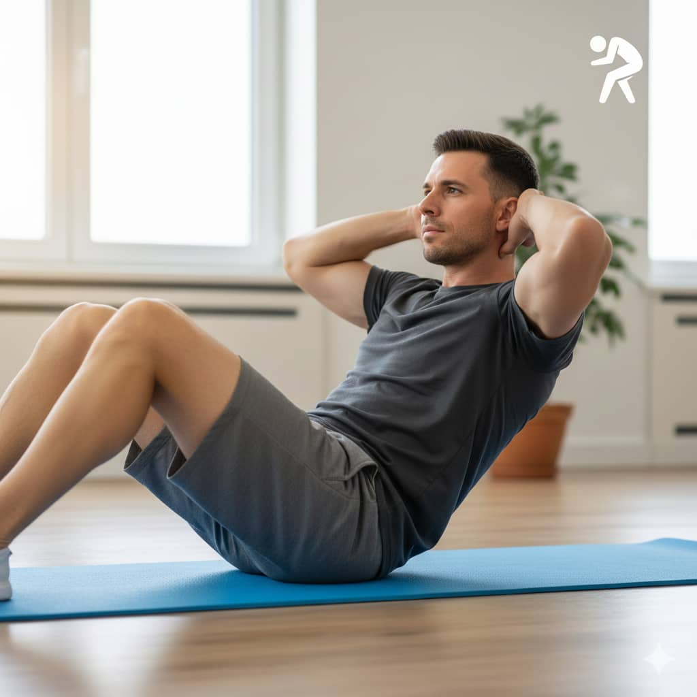
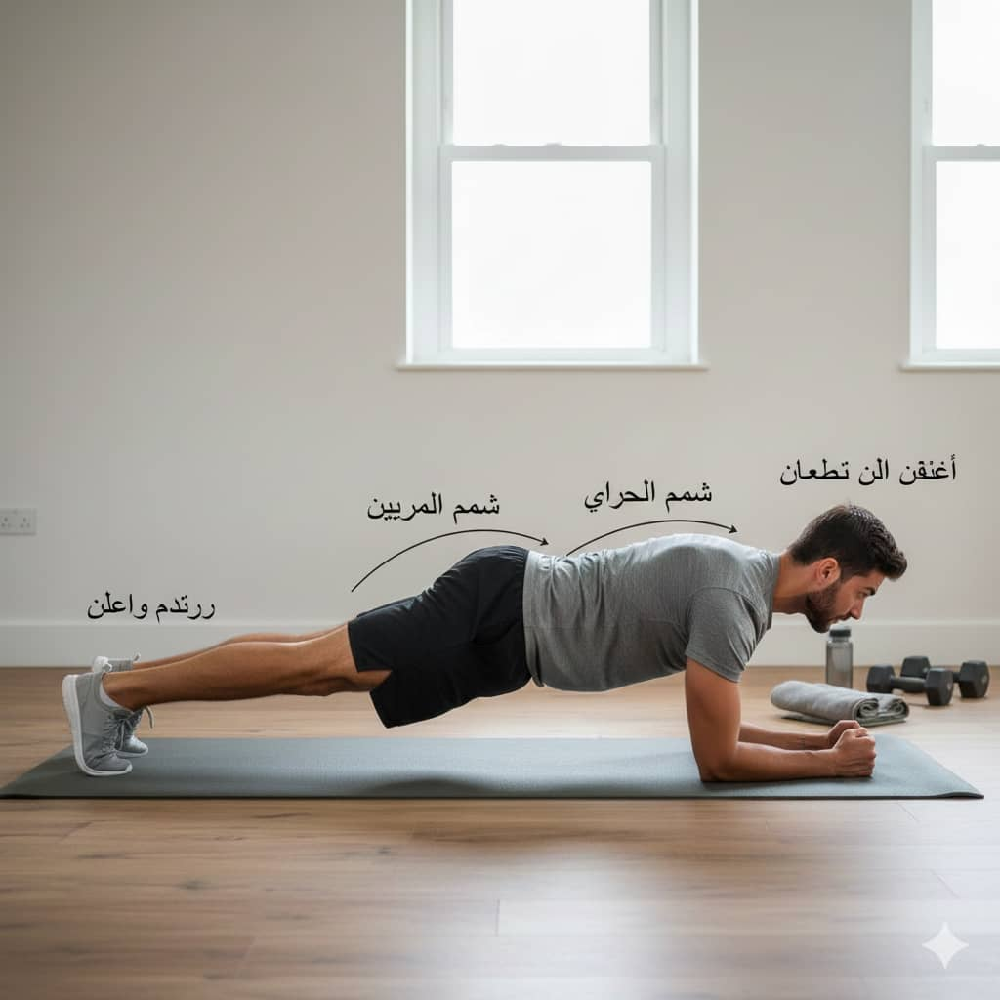
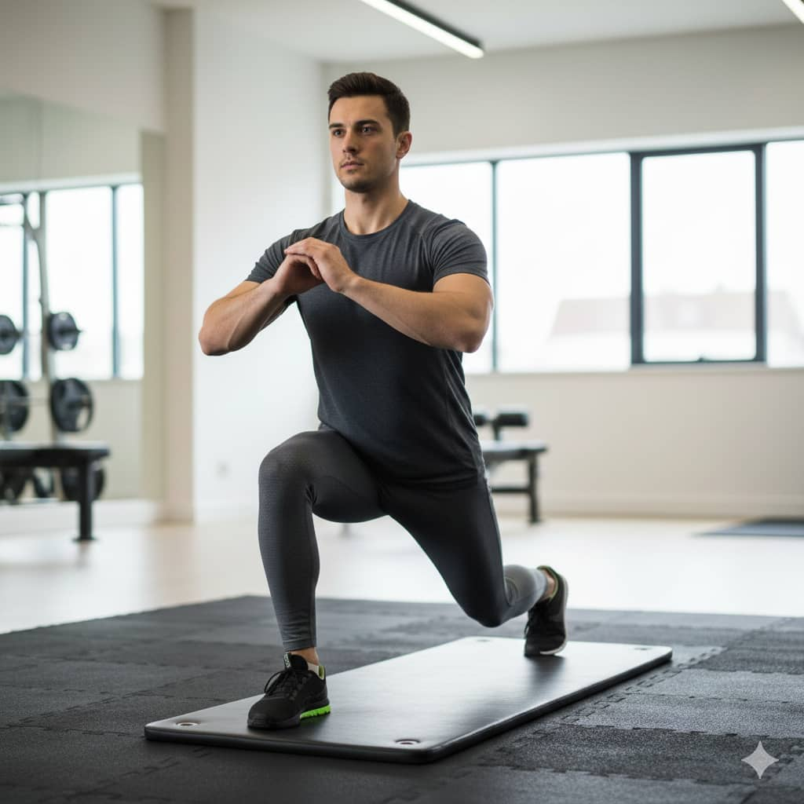
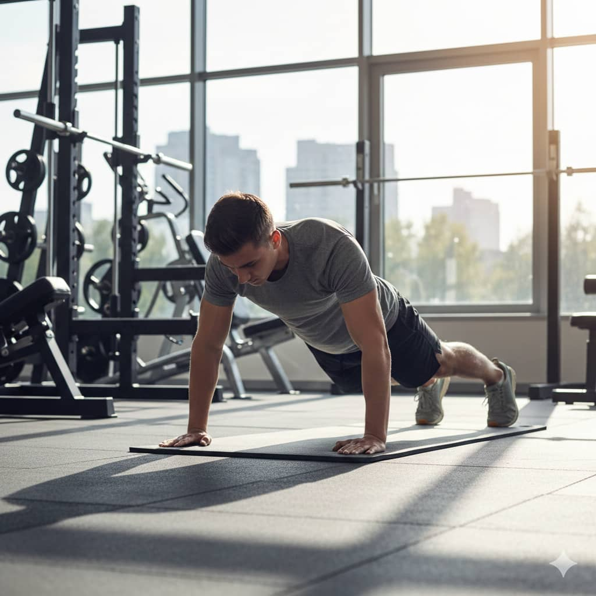
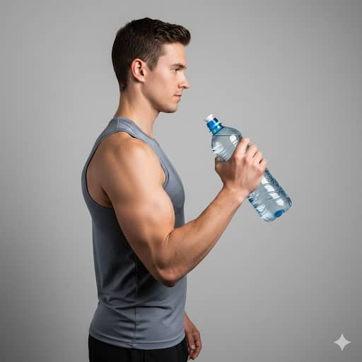

برنامج تمارين أسبوعي – شد وتصغير مع شرح مفصل
اليوم 1 – مؤخرة وأفخاذ (الأساس)
سكوات ضيق
قف مستقيم، القدمين قريبين، اليدين أمامك أو على الصدر. انزل ببطء 3 ثوانٍ كأنك تجلس على كرسي، ظهر مستقيم وبطن مشدودة، ثم اصعد 2 ثانية.

- 3 مجموعات × 20 عدة
- راحة 30–40 ثانية
- تشعر في: المؤخرة والفخذ الأمامي
- أخطاء شائعة: فتح الرجلين كثير، الميل للأمام
- نصيحة: ركّز على النزول البطيء والتحكم
لانجز ثابت للأمام
قف مستقيم، خطوة طويلة للأمام بالرجل اليمنى، انزل حتى الركبة الخلفية تقترب من الأرض، اضغط بالكعب للأعلى وارجع للوقوف، ثم بدّل الرجل.
- 3 × 15 لكل رجل
- راحة 40 ثانية
- تشعر في: المؤخرة والفخذين
- أخطاء: الدفع بأصابع القدم، الميل للأمام
- نصيحة: نزول بطيء وتحكم
رفع رجل جانبي
استلقِ على جنبك، الرجل العليا مستقيمة، ارفعها للأعلى ببطء، انزل ببطء بدون ميل الجسم.

- 3 × 20 لكل رجل
- راحة 30 ثانية
- تشعر في: الفخذ الجانبي
- أخطاء: ميل الجسم للأمام أو الخلف
- نصيحة: ركّز على تحريك الرجل فقط
رفع الحوض (Glute Bridge)
استلقِ على ظهرك، اثنِ الركبتين، ارفع الحوض للأعلى، شد المؤخرة ثانيتين، انزل ببطء.

- 3 × 20
- راحة 40 ثانية
- تشعر في: المؤخرة والفخذ الخلفي
- أخطاء: رفع الظهر بدل الحوض، النزول السريع
- نصيحة: شد المؤخرة فقط، تحكم بالنزول
اليوم 2 – بطن + كارديو
كرنش
استلقِ على ظهرك، الركبتين مثنيتين، ارفع الرأس والكتفين قليلًا بدون شد الرقبة.
- 3 × 20
- راحة 30 ثانية
- تشعر في: البطن العلوي
- أخطاء: شد الرقبة أو الظهر
- نصيحة: تحكم بالرفع والنزول ببطء
رفع الأرجل
استلقِ على ظهرك، اليدين تحت المؤخرة، ارفع الرجلين مستقيمتين ثم انزل ببطء.

- 3 × 15
- راحة 30 ثانية
- تشعر في: أسفل البطن
- أخطاء: استخدام الظهر بدل البطن
- نصيحة: شد البطن طوال الوقت
بلانك
اسند على المرفقين، جسم مستقيم، شد البطن، تنفس منتظم.
- 3 × 40 ثانية
- راحة 30 ثانية
- تشعر في: البطن + الظهر
- أخطاء: رفع أو خفض الورك
- نصيحة: جسم مستقيم دائمًا
كارديو

- مشي بالمكان 10 دقائق
- نط خفيف 5 دقائق
اليوم 3 – مؤخرة وأفخاذ (زوايا مختلفة)
سكوات نبضات (Pulse Squat)
انزل نصف سكوات ثم قم بحركات قصيرة متواصلة.
- 3 × 15
- راحة 30 ثانية
- تشعر في: المؤخرة والفخذ الأمامي
- أخطاء: النزول السريع، فتح الرجلين
- نصيحة: تحكم في النبض فقط
لانجز خلفي
قف مستقيم، خطوة للرجل الخلفية، انزل حتى الركبة الخلفية تقترب من الأرض، اضغط بالكعب للأعلى وارجع، بدّل الرجل.
- 3 × 12 لكل رجل
- راحة 40 ثانية
- تشعر في: المؤخرة والفخذ الخلفي
- أخطاء: الدفع بالأصابع، الميل للأمام
- نصيحة: تحكم في النزول ببطء
رفع الحوض رجل واحدة
استلقِ على ظهرك، اثنِ ركبة واحدة، الرجل الأخرى مستقيمة مرفوعة قليلًا، ارفع الحوض مشدودًا، شد المؤخرة ثانيتين، انزل ببطء، بدّل الرجل.
- 3 × 12 لكل رجل
- راحة 40–45 ثانية
- تشعر في: المؤخرة والفخذ الخلفي
- أخطاء: رفع الظهر بدل الحوض، النزول السريع
- نصيحة: ركّز على شد المؤخرة فقط
اليوم 4 – صدر وذراع
ضغط صدر
استلقِ على الأرض أو سطح مستوٍ، ثني المرفقين 90°، ارفع الجسم للأعلى ببطء.
- 3 × 12
- راحة 40 ثانية
- تشعر في: الصدر والذراع
- أخطاء: النزول السريع، المرفقان بعيدين جدًا
- نصيحة: تحكم بالنزول والصعود
بايسبس (زجاجة ماء)
- 3 × 12 لكل ذراع
- قف أو اجلس وظهرك مستقيم. أمسك زجاجة ماء بيدك، راحة اليد للأمام. الذراع ممدودة للأسفل، الكوع قريب من جسمك. ارفع الزجاجة ببطء بثني الكوع فقط. عندما تصل الزجاجة قرب الكتف: شدّ العضلة ثبّت ثانية واحدة أنزل الزجاجة ببطء حتى تستقيم الذراع. كرر ثم بدّل اليد.
- راحة 30 ثانية
- تشعر في: البايسبس
- أخطاء: تحريك المرفق، سرعة الحركة
- نصيحة: شد العضلة عند الصعود
ترايسبس خلف الرأس
- 3 × 12
- الوضعية الأساسية: قف مستقيم، رجلك بعرض الكتفين، ظهرك مستقيم. أمسك زجاجة ماء بكلتا يديك فوق رأسك. حركة النزول: اثنِ المرفقين ببطء، نزّل الزجاجة وراء الرأس. المرفقان يبقوا قريبين من الرأس، ما يفتحوش للخارج. الشد والفرد: شد عضلات الترايسبس عند النزول. ثم ارفع الزجاجة للأعلى بفرد المرفقين حتى يرجعوا مستقيمين.
- راحة 30 ثانية
- تشعر في: الجزء الخلفي للذراع
- أخطاء: استخدام الظهر
- نصيحة: ركّز على العضلة فقط
سكوات خفيف

- 2 × 20
- راحة 30 ثانية
- تشعر في: المؤخرة والفخذين بدون تضخيم
اليوم 5 – مؤخرة + حرق
سكوات ضيق
- 3 × 20
- راحة 30–40 ثانية
رفع رجل خلفي (Donkey Kicks)

- 3 × 20 لكل رجل
- 1) الوضعية الأساسية ضع نفسك على أربع: اليدين على الأرض بمستوى الكتفين، الركبتين على الأرض بمستوى الوركين. الظهر مستقيم والعضلات البطنية مشدودة. الرقبة في وضعية طبيعية، النظر للأمام قليلاً. 2) حركة رفع الرجل اثنِ ركبة واحدة وابقَ القدم على الأرض. ارفع الرجل الأخرى إلى الخلف والأعلى مع ثني الركبة قليلاً، كما لو أنك تريد “ركل السقف”. حاول أن تكون الرجل المرفوعة في خط واحد مع ظهرك. شد عضلات المؤخرة أثناء رفع الرجل.
- راحة 40 ثانية
لانجز جانبي
- 3 × 12 لكل رجل
- راحة 40 ثانية
سكوات خفيف متواصل
- 3 دقائق
- راحة 30 ثانية
يوم التمطيط
- تمطيط الفخذ الأمامي
- تمطيط الخلفي
- تمطيط المؤخرة
- تمطيط أسفل الظهر
- 30–40 ثانية لكل وضعية
يوم الراحة
راحة تامة – مسموح مشي خفيف فقط.
معلومات ونصائح مهمة
- إذا حسّيت بالحرق = التمرين صحيح
- الألم القوي = أوقف فورًا
- النتائج تكون بالمقاس وليس الوزن
- الراحة القصيرة تسرّع الشد
- النفس: شهيق نزول – زفير صعود
- تحكم في النزول والصعود لكل تمرين للحصول على أفضل نتيجة